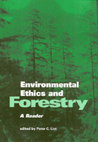

<body bgcolor="#FFFFFF" text="#000000" link="#0000FF" vlink="#CC0000" alink="#CC0000"><center><hr width="350" size="1" align="center" noshade>An exploration of the philosophical nature of ecology<hr width="350" size="1" align="center" noshade><p><a href="https://cdcshoppingcart.uchicago.edu/Cart/ChicagoBook.aspx?ISBN=9781566397841&&PRESS=temple" target="_top">Buy this book!</a> | <a href="https://cdcshoppingcart.uchicago.edu/Cart/Cart.aspx?PRESS=temple" target="_top">View Cart</a> | <a href="https://cdcshoppingcart.uchicago.edu/Cart/Cart.aspx?PRESS=temple" target="_top">Check Out</a></p><p></p></center><!--none//--><h1>Environmental Ethics and Forestry</h1>
<H2>A Reader</H2>
<h3>edited by Peter C. List</h3>
<P>cloth 1-56639-784-7 $99.50, Sep 00, <FONT COLOR=#990033>Available</FONT>
<br>paper 1-56639-785-5 $42.95, Sep 00, <FONT COLOR=#990033>Available</FONT>
<BR> 416 pp
7x10
2&nbsp;figures
</P><P>During the past twenty-five years, North American forestry has received increasingly vigorous scrutiny. Critics including the environmentalists, environmental scientists, representatives of public interest groups, and many individual citizens have expressed concerns about forestry's basic assumptions and methods, as well as its practical outcomes. Criticism has centered on such issues as the exploitation of forests for timber production, the reduction and fragmentation of old-growth habitats, the destruction of biodiversity, the degradation of grasslands through grazing practices, lack of government attention to recreation facilities, silvicultural methods like clearcutting and the use of herbicides and pesticides, the exportation of industrial forestry techniques to other parts of the world, and the use of public monies to provide services for private resouce companies, as in the creation of logging roads.
<P>This rising tide of public scrutiny has led many foresters to suspect that their "contract" with society to manage forests using their best professional judgment had been undermined. Some of these professionals, as well as some of their critics, have begun to reexamine their old beliefs and to look for new ways of practicing forestry. Part of this reflective process has entailed new directions in environmental ethics and environmental philosophy.
<P>This reader brings together some of the new thinking in this area. Here students of the applied environmental and natural resource sciences, as well as the interested general reader, will discover a rich sampling of writings in environmental ethics and philosophy as they apply to forestry. Readings focus on basic ethical systems in forestry and forest management, philosophical issues in forestry ethics, codes of ethics in forestry and related natural resource sciences such as fisheries science and wildlife biology, Aldo Leopold's land ethic in forestry, ethical advocacy and whistleblowing in government resource agencies, the ethics of new forestry, ecoforestry, and public debate in forestry, as well as ethical issues in global forestry such as the responsibilities of forest corporations, environmentalists, and individual wood consumers.
<P>This volume contains materials from the founders of forestry ethics, such as Bernhard Fernow, Giford Pinchot, John Muir, and Aldo Leopold; from such organizations as the Society of American Foresters, the Wildlife Society, the American Fisheries Society, Forest Service Employees for Environmental Ethics, and the Ecoforesters group, in addition to writings by a variety of well-known environmental philosophers and foresters, including Holmes Rolston, Robin Attfield, Lawrence Johnson, Michael McDonald, Paul Wood, James E. Coufal, Raymond Craig, Kristin Shrader-Frechette, Jeff DeBonis, Jim L. Bowyer, Alasdair Gunn, Goug Gaigle, Alan G. McQuillan, Stephanie Kaza, Alan Dregson, Duncan Taylor, and Kathleen Dean Moore.
<BR>&nbsp;<h2>Excerpt</h2><P>Excerpt available at <a href="http://www.temple.edu/tempress">www.temple.edu/tempress</a></p>
<BR>&nbsp;<h2>Reviews</h2>
<p><i>"...the articles in this reader create a rich foundation for discussion and for questioning the way we use and manage natural resources."</i>
<br>&#151<b><i>Journal of Environmental Education</i></b>
<BR>&nbsp;<h2>Contents</h2><P>
<p>Preface
<br>Acknowledgments
<br>General Introduction
<p><b>Part I: Ethical Systems in Forestry</b>
<br>THE ECONOMIC RESOURCE MODEL OF FORESTS AND FORESTRY
<br>1. Forest and Forestry Defined &#150 Bernhard Fernow
<br>2. Principles of Conservation &#150 Gifford Pinchot
<br>3. The Use of the National Forests &#150 Gifford Pinchot
<br>JOHN MUIR ON THE PRESERVATION OF THE WILD FORESTS OF THE WEST
<br>4. The American Forests &#150 John Muir
<br>ALDO LEOPOLD'S LAND ETHIC IN FORESTRY
<br>5. The Land Ethic &#150 Aldo Leopold
<p><b>Part II: Two Philosophical Issues in Forestry Ethics</b>
<br>MULTIPLE VALUES IN FORESTS
<br>6. Values Deep in the Woods &#150 Holmes Rolston III
<br>7. Aesthetic Experience in Forests &#150 Holmes Rolston III
<br>THE RIGHTS OF TREES AND OTHER NATURAL OBJECTS
<br>8. The Good of Trees &#150 Robin Attfield
<br>9. Holistic Entities&#151Species &#150 Lawrence E. Johnson
<br>10. Ecointerests and Forest Fires &#150 Lawrence E. Johnson
<p><b>Part III: Contemporary Forestry Ethics</b>
<br>BASIC PRINCIPLES IN FORESTRY ETHICS
<br>11. First Principles for Professional Foresters &#150 Michael McDonald
<br>12. "The Greatest Good for the Greatest Number": Is This a Good Land-Use Ethic &#150 Paul M. Wood
<br>13. Environmental Ethics: Cogitations and Ruminations of a Forester &#150 James E. Coufal
<br>14. The Ecoforestry Declaration of Interdependence
<br>CODES OF ETHICS IN FORESTRY, FISHERIES, AND WILDLIFE BIOLOGY
<br>15. Code of Ethics for Members of the Society of American Foresters
<br>16. Code of Ethics and Standards for Professional Conduct for Wildlife Biologists, The Wildlife Society
<br>17. Code of Practices, American Fisheries Society
<br>18. Code of Ethics, Oregon Chapter, American Fisheries Society
<br>19. A Code of Ethics for Government Service
<br>20. The Ecoforester's Way
<br>ADOPTING A LAND ETHIC IN THE SOCIETY OF AMERICAN FORESTERS
<br>21. The Land Ethic Question &#150 James E. Coufal
<br>22. Land Ethic Canon Recommended by Committee &#150 Norwin E. Linnartz, Raymond S. Craig, and M. B. Dickerman
<br>23. A Forest Ethic and Multivalue Forest Management: The Integrity of Forests and of Foresters Are Bound Together &#150 Holmes Rolston III and James Coufal
<br>24. Further Development for a Land Ethic Canon &#150 Raymond S. Craig
<br>25. Land Ethic Canon Proposal: A Report from the Task Force &#150 Raymond S. Craig
<br>ADVOCATING NEW ENVIRONMENTAL ETHICS IN PUBLIC NATURAL RESOURCE AGENCIES
<br>26. Ethics and Environmental Advocacy &#150 Kristin Shrader-Frechette
<br>27. Inner Voice
<br>28. AFSEEE Vision: Strategy for Forest Service Reform
<br>29. Speaking Out: A Letter to the Chief of the U.S. Forest Service &#150 Jeff DeBonis
<br>30. Chief Robertson Responds &#150 F. Dale Robertson
<br>31. On Speaking Out: Fighting for Resource Ethics in the BLM
<br>32. Whistleblower Spills Beans on North Kaibab
<br>33. A Combat Biologist Calls It Quits: An Interview with Al Espinosa
<br>34. Tongass Employees Speak Out
<br>35. Enough Is Enough! A Tongass Timber Beast Puts His Foot Down &#150 Cheri Brooks
<br>ETHICAL ISSUES IN GLOBAL FORESTRY
<br>36. Responsible Environmentalism: The Ethical Features of Forest Harvest and Wood Use on a Global Scale &#150 James L. Bowyer
<br>37. Environmental Ethics and Tropical Rain Forests: Should Greens Have Standing? &#150 Alastair S. Gunn
<br>38. Globalization of the Timber Trade &#150 Doug Diagle
<br>NEW FORESTRY, NEW FOREST PHILOSOPHIES
<br>39. Cabbages and Kings: The Ethics and Aesthetics of New Forestry &#150 Alan G. McQuillan
<br>40. Ethical Tensions in the Northern Forest &#150 Stephanie Kaza
<br>41. An Overview of Ecoforestry: Introduction &#150 Alan Drengson and Duncan Taylor
<br>EPILOGUE
<br>Traveling the Logging Road, Coast Range &#150 Kathleen Dean Moore
<br>Selected Bibliography
<br>Index
</P><BR>&nbsp;<H2>About the Author(s)</H2>
<P><B>Peter C. List</B> is Professor of Philosophy at Oregon State University, where he teaches courses on environmental ethics, ethical issues in the natural resource sciences, and sustainable forestry. He is the author of articles on Aldo Leopold's land ethic, and co-author of several articles on public attitudes about federal forests and forest management, published in the <I>Journal of Forestry</I> and <I>Society and Natural Resources</I>.</P>
<BR><H2>Subject Categories</H2>
<p><A HREF="/tempress/nature.html" TARGET="_top">Nature and the Environment</a>
<BR><A HREF="/tempress/philosophy.html" TARGET="_top">Philosophy and Ethics</a>
</p>
<BR><h2 class="inpageheading">In the series</H2>
<P><I><a href="http://www.temple.edu/tempress/environmental.html" onMouseOver="window.status='Click for other books in this series!'; return true;" onMouseOut="window.status=''; return true;" target="_top">Environmental Ethics, Values, and Policy</a></i>, edited by Holmes Rolston III.
</p><p>No longer active.</p>
<p align="center"><a href="https://cdcshoppingcart.uchicago.edu/Cart/ChicagoBook.aspx?ISBN=9781566397841&&PRESS=temple" target="_top">Buy this book!</a> | <a href="https://cdcshoppingcart.uchicago.edu/Cart/Cart.aspx?PRESS=temple" target="_top">View Cart</a> | <a href="https://cdcshoppingcart.uchicago.edu/Cart/Cart.aspx?PRESS=temple" target="_top">Check Out</a></p><p><font face="Arial" size="1"><a href="copyright.html" onMouseOver="window.status='Web Copyright Policy';return true;" onMouseOut="window.status=''" title="Web Copyright Policy">&copy;</a> 2015 <a href="http://www.temple.edu" target="new" onMouseOver="window.status='Link to Temple University home page';return true;" onMouseOut="window.status=''" title="Link to Temple University home page">Temple University</a>. All Rights Reserved. http://www.temple.edu/tempress/titles/1154_reg.html</font></p>